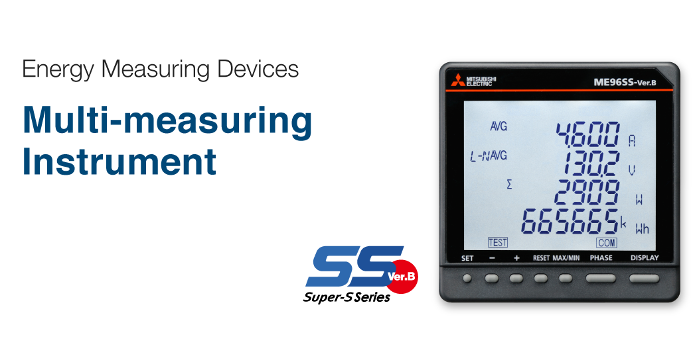
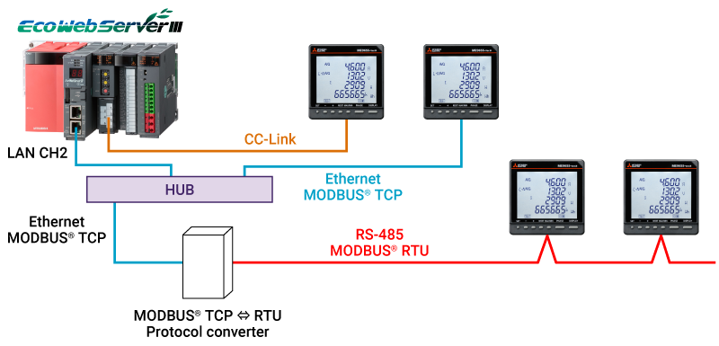
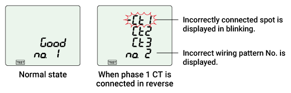

Electrical IndicatorsElectronic Multi Measuring Instruments (ME96 Series)


Satu Perangkat Memiliki Multifungsi
Seri ME96SS dapat menggantikan beberapa alat ukur dengan satu perangkat.
Ukuran Kompak
Merealisasikan pengurangan ukuran untuk ME96SSEB-MB.
Pencadangan Data
ME96SSHB/ME96SSRB tersedia dengan fungsi pencatatan internal dan modul opsional (ME-0000BU-SS96, ME-0000BU25-SS96) yang dapat menyimpan data bahkan saat komunikasi tidak dapat terjalin.
Jaringan
ME96SS memiliki fungsi komunikasi MODBUS® RTU (RS-485) sebagai standar. Tersedia pula modul opsional yang dapat digunakan untuk komunikasi CC-Link dan komunikasi MODBUS® TCP dalam jaringan Ethernet.

Memeriksa Fungsi Dukungan Pengkabelan Input
Fungsi tampilan pola pengkabelan yang salah
Apakah kabel input tegangan/arus sudah benar atau belum akan ditampilkan. Mengenai pola tampilan kabel yang salah, lihat buku petunjuk.
